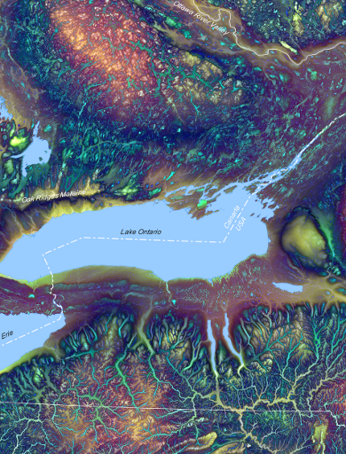
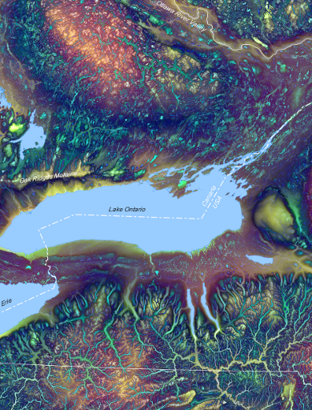

Dr. John Lindsay's Research
Geomorphometry is the field of study concerned with the representation and quantitative analysis of topography. The discipline focuses on extracting information from digital elevation models (DEMs) to better understand landscape processes. As a sub-discipline of geomatics, geomorphometry draws upon the methods and theories of geographical information science, spatial analysis, geocomputation, image processing, and remote sensing. Over the past few decades, improved terrain modeling technologies and processing techniques have underpinned many advancements in soils and vegetation mapping, hydrological modeling, sediment transport modeling, slope stability analysis, geological resources inventorying, and numerous other environmental applications.
Together with my colleagues and graduate
students, I explore applications of geomorphometry to spatial hydrology (hydrogeomatics) and
geomorphology. I am particularly interested in applications involving airborne laser scanning (airborne
LiDAR) and terrestrial laser scanning (terrestrial LiDAR). The use of DEMs to model surface drainage patterns,
including the handling of topographic depressions in flow-path modeling, has been a career-long research
theme. Headwater channels, gullies, and ephemeral streams are also important strands of my research
program. My research projects
often involve the development and testing of novel techniques for spatial analysis and as such
I have developed open-source GIS software to serve as platforms for these
research contributions.
Visit me on my University of Guelph, Department of Geography, Enviornment and Geomatics website, read some of my ideas on spatial analysis and Whitebox GAT at my blog, or visit my ResearchGate site.
 
